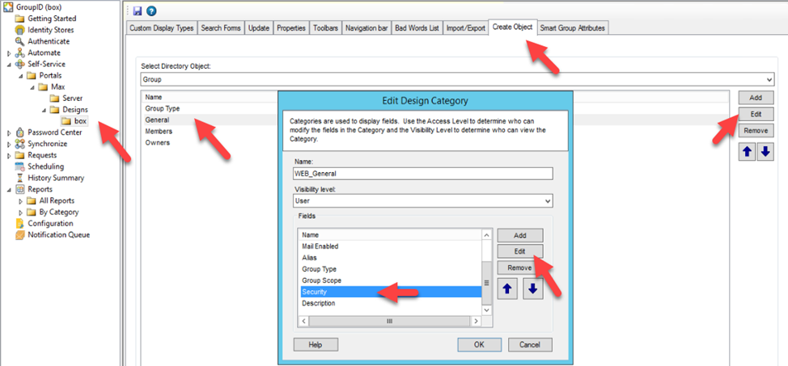
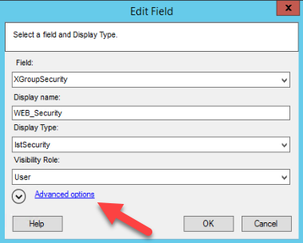
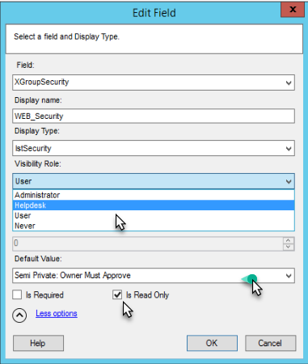
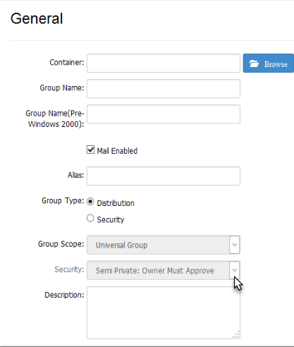
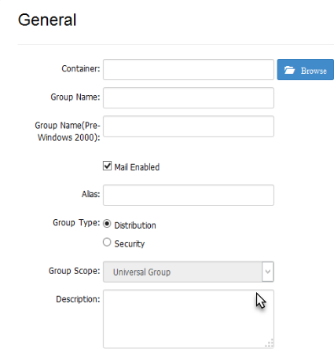

Applies To
Directory Manager 10 – Self-Service
Overview
By default, users can select from multiple security types when creating a group in the Self-Service portal. You may want to set semi-private as the default security type in the Create Group wizard, while still allowing users to choose another option or enforce the default for all users.
Instructions
- In the Directory Manager Management Console, navigate to Self-Service > Portals > [Required portal] > Designs > [Required identity store].
- On the Create Object tab, select Group from the Select Directory Object drop-down list.
- In the Name list, select General and click Edit.
-
In the Edit Design Category dialog box, select
Security and click Edit.
 -
In the Edit Field dialog box, click the
Advanced options link.
 -
Select Semi Private: Owner Must Approve from the
Default Value drop-down list.
 -
Optional: To enforce the semi-private security type, select the
Is Read-Only check box. This will disable the
Security drop-down list in the Create Group wizard,
displaying only the default value.
 -
Optional: To hide the Security drop-down list from a specific role,
select the desired role (such as Administrator or Helpdesk) from the
Visibility Role drop-down list. The Security drop-down
list will be visible to users of the selected role and roles with a higher priority
value, and hidden from all roles with a lower priority value.
 - Click OK to close the dialog boxes and save your changes.